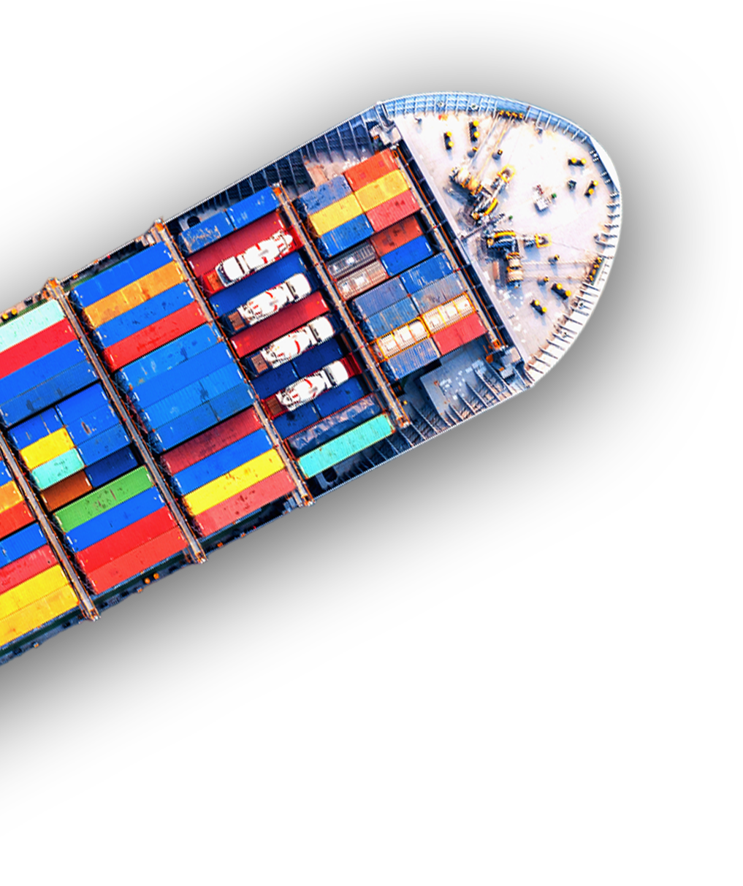
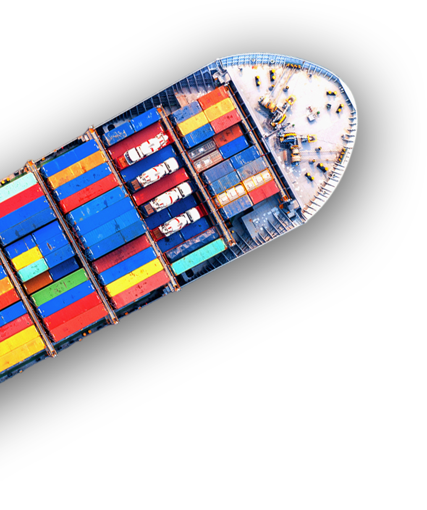

Processo de Importação
A gestão do processo de importação é um serviço da Saygo que oferece suporte completo ao cliente, desde o estudo de viabilidade de produto, até a conclusão do processo de importação.
Visando descomplicar todos os trâmites e garantir a chegada da sua mercadoria sem complicações e imprevistos. Os principais passos da gestão de processo de importação feita pela Saygo são:
Estudo da viabilidade do produto
Levantamento do custo da nacionalização
Auxílio no fechamento de câmbio
Acompanhamento de trânsito internacional e chegada da mercadoria
Acompanhamento do desembaraço aduaneiro
Conferência dos valores e negociação junto aos fornecedores
Acompanhamento do registro da DI
Fechamento da importação
Com todos esses benefícios, torna-se mais eficiente e mais econômico contar com uma gestão do processo de importação para organizar e tomar conta de todos os procedimentos que envolvem esse tipo de negociação.
 

Saiba mais sobre a
“Gestão do Processo de Importação”
Para que a gestão do processo de importação seja feita de maneira eficaz, é preciso ter conhecimento das informações que englobam todos os procedimentos. Assim evita-se o retrabalho, minimiza os erros, amplia a visão sobre os processos e otimiza as operações.
Caso a gestão seja bem feita, as chances de redução do valor do produto final também pode ser uma das vantagens de todo esse trâmite logístico.
Se você ou sua empresa pretende implementar e adotar negociações internacionais, esse é o melhor momento para conhecer a prática de gestão do processo de importação, como uma forma de auxiliar nas tomadas de decisão e otimizar os processos.
preciso de uma assessoria de comexO que é gestão de importação?
As práticas de importação são uma ótima forma de gerar oportunidades e expandir as atividades das empresas. Os processos envolvidos nessas transações são um tanto quanto burocráticos e complexos, ainda mais para os negócios que estão começando a negociar internacionalmente.
Além do mais, falhas cometidas nesse processo podem acarretar em prejuízos para a empresa. Por este motivo, a melhor alternativa a se tomar pode ser a delegação desses trabalhos para profissionais especializados no assunto e na gestão do processo de importação.
Em um mercado cada vez mais competitivo é preciso pensar em estratégias que alavancam a empresa e diminuem ao máximo o risco de erros. A negociação da taxa de câmbio, o estudo, a realização do fechamento da melhor forma de transporte e a escolha do despachante certo são alguns dos pontos de atenção.
Isso sem contar que um frete de valor elevado, irá impactar diretamente nos valores dos impostos pagos no processo de importação. Assim, sendo necessário que todos os cálculos sejam realizados previamente, para que não haja prejuízos.
Como funciona a gestão do processo de importação
Para fazer a gestão do processo de importação, é preciso levar vários fatores em consideração. Isso significa que quando se trata de negociações com o mercado internacional, é necessário analisar todos os aspectos que podem prejudicar sua empresa.
Analisar a qualidade e fazer um estudo da viabilidade do produto, é outro ponto essencial para ter bons resultados durante as etapas de importação.
O custo operacional também tem um papel fundamental durante essas transações, já que ele é responsável por fazer que a sua operação ocorra da melhor forma, evitando custos surpresas ou desperdícios.
A gestão do processo de importação, também é uma forma de garantir a segurança no transporte dos produtos, acompanhando o trânsito internacional, o contato com o agente de carga e a previsão das entregas. Tudo isso para evitar perdas de tempo entre o processo do pedido até a chegada dos produtos
Dessa forma, a importação da sua empresa estará sendo acompanhada da melhor maneira, sem que tenha imprevistos e proporcionando resultados positivos durante todo o processo.
preciso de uma assessoria de comex